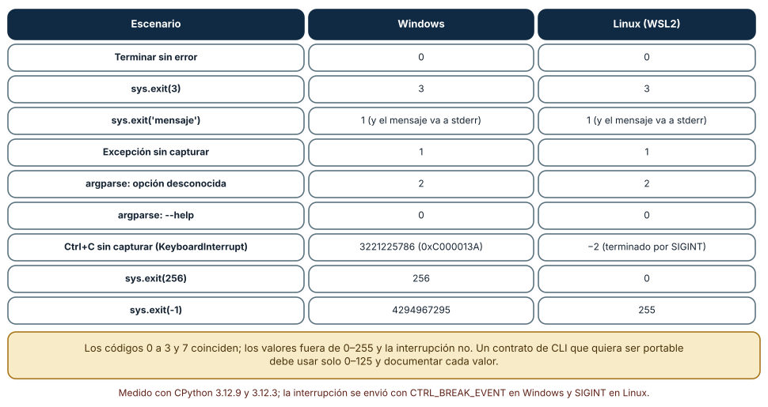
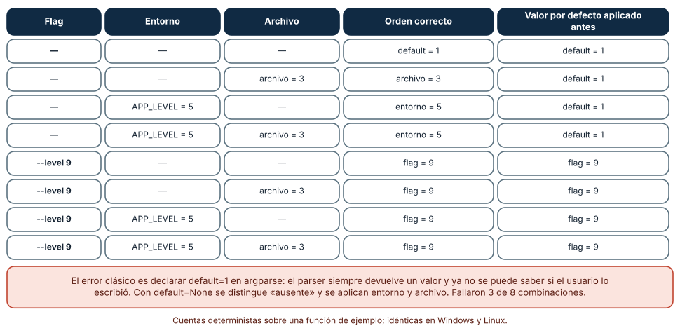
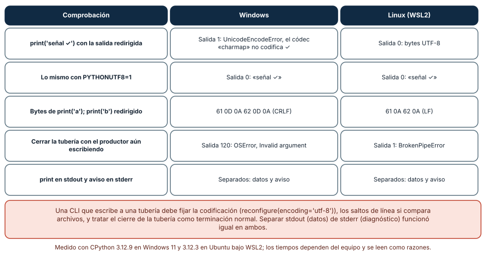

← SE-112 — Paquetes, módulos y publicación · ↑ Parte 09 · 📚 Índice completo · 🌐 Portal · SE-114 — Scripting repetible y tareas idempotentes →
Punto profesional y fundamento pedagógico
Punto profesional. La clase existe para diseñar una CLI como interfaz pública con gramática, streams, códigos de salida y compatibilidad.
Por qué aparece aquí. Se sitúa después de Paquetes, módulos y publicación y antes de Scripting repetible y tareas idempotentes: convierte el conocimiento anterior en una decisión observable que la clase siguiente podrá reutilizar. La continuidad se comprueba en el artefacto, no por compartir vocabulario.
Error conceptual que debe corregir. Imprimir errores en stdout o devolver cero tras un fallo.
Secuencia de aprendizaje. Antes de leer la solución, el estudiante predice el resultado del caso normal y del error conceptual anterior. Luego explica un caso resuelto paso a paso, construye un contraejemplo que cambie la decisión y, sin consultar el texto, reconstruye el mecanismo y lo aplica a una entrada nueva. La secuencia usa predicción, explicación propia, contraste y recuperación. ICAP distingue participación de construcción de conocimiento; How People Learn II exige conectar conocimiento previo, contexto y transferencia; la práctica de recuperación respalda producir de nuevo la explicación tras una demora; y Education for Life and Work exige devolución que explique la causa del error.
Evidencia de aprendizaje. Cli-contract.md con help, casos, stdout/stderr, exit codes y automatización. Debe contener predicción previa, observación, explicación causal, contraejemplo, criterio de aceptación y una nota de qué dato haría cambiar la conclusión.
Límite de la conclusión. Argparse resuelve parsing; no diseña por sí solo la experiencia.
Trazabilidad fuente → afirmación
| Fuente primaria u oficial | Afirmación que respalda | Lo que no prueba |
|---|---|---|
| Python Standard Library | Argparse, importlib.metadata, subprocess y apis de automatización; autoridad: Python Software Foundation | No demuestra por sí sola que el artefacto del estudiante sea correcto. |
| Semantic Versioning 2.0.0 | Api pública, versiones, prereleases y compatibilidad declarada; autoridad: Semantic Versioning project | No demuestra por sí sola que el artefacto del estudiante sea correcto. |
| Python argparse | define parsing, ayuda y errores de una CLI | No demuestra por sí sola que el artefacto del estudiante sea correcto. |
| POSIX Utility Syntax Guidelines | define convenciones interoperables de argumentos | No demuestra por sí sola que el artefacto del estudiante sea correcto. |
Antes de empezar
Esta clase continúa el producto reutilizable con SDK y CLI de la Parte 09. Recupera la evidencia de la clase anterior, añade una decisión propia de CLI, flags, configuración y códigos de salida y deja un artefacto que la clase siguiente deberá consumir. La pregunta activa es: ¿Cómo diseñar una CLI consumible por personas y automatizaciones sin mezclar datos con diagnóstico?
Prerrequisitos
- Haber completado la clase anterior o reconstruir su contrato y evidencia.
- Python 3.11 o posterior, terminal, editor y Git; un segundo runtime es opcional y debe declararse.
- Trabajar con fixtures sintéticos: ninguna observación necesita datos de una persona o sistema real.
Problema auténtico
La CLI imprime progreso y JSON en stdout, acepta flag y variable con precedencia implícita y devuelve cero aunque falle un plugin. Scripts consumidores no pueden distinguir éxito parcial.
Objetivos observables
Al terminar podrás explicar los cinco mecanismos de esta clase, predecir su comportamiento antes de ejecutar, construir un caso normal y uno límite, diagnosticar el fallo controlado, comparar una alternativa y entregar evidencia que otra persona pueda reproducir.
Mapa conceptual
Ver la notación fuente del diagrama
flowchart LR
N1[Comandos, argumentos / flags] --> N2[Configuración / precedencia] --> N3[stdout, stderr / formatos] --> N4[Códigos de salida] --> N5[Señales, cancelación / atomicidad]
N5 -->|fallo o cambio| N1El mapa se lee como una cadena de razonamiento, no como fases obligatorias del runtime. La flecha de retorno indica que un fallo o cambio de requisito obliga a revisar el modelo inicial; no autoriza a parchear solo la última salida.
Temas y por qué importan
| Tema | Por qué cambia una decisión profesional | Evidencia mínima |
|---|---|---|
| Comandos, argumentos y flags | Un comando expresa acción; argumentos suelen identificar operandos y flags modifican comportamiento. | Predicción, traza causal y contraejemplo de Comandos, argumentos y flags en cli-contract.md |
| Configuración y precedencia | Defaults, archivo, entorno y CLI necesitan orden documentado y opción de explicar valor efectivo sin revelar secreto. | Predicción, traza causal y contraejemplo de Configuración y precedencia en cli-contract.md |
| stdout, stderr y formatos | stdout transporta resultado consumible; stderr contiene diagnóstico. | Predicción, traza causal y contraejemplo de stdout, stderr y formatos en cli-contract.md |
| Códigos de salida | Cero indica éxito contractual; valores no cero clasifican uso inválido, datos rechazados, dependencia fallida o error interno según matriz publicada. | Predicción, traza causal y contraejemplo de Códigos de salida en cli-contract.md |
| Señales, cancelación y atomicidad | Ctrl+C solicita cancelación y debe limpiar archivos temporales o dejar estado recuperable. | Predicción, traza causal y contraejemplo de Señales, cancelación y atomicidad en cli-contract.md |
Conceptos y decisiones
1. Comandos, argumentos y flags
Un comando expresa acción; argumentos suelen identificar operandos y flags modifican comportamiento. Nombres, defaults y ayuda forman contrato. Flags booleanos deben permitir intención inequívoca y no interpretar false textual mediante truthiness.
2. Configuración y precedencia
Defaults, archivo, entorno y CLI necesitan orden documentado y opción de explicar valor efectivo sin revelar secreto. Configuración inválida falla antes de producir efectos. Ausencia, vacío y cero se distinguen.
3. stdout, stderr y formatos
stdout transporta resultado consumible; stderr contiene diagnóstico. Modo humano y JSON pueden coexistir de forma explícita. Un esquema/version de salida evita que cambiar redacción rompa parsers.
4. Códigos de salida
Cero indica éxito contractual; valores no cero clasifican uso inválido, datos rechazados, dependencia fallida o error interno según matriz publicada. El código no transporta detalle completo; stderr o JSON estructurado lo complementan.
5. Señales, cancelación y atomicidad
Ctrl+C solicita cancelación y debe limpiar archivos temporales o dejar estado recuperable. Escribir a temporal y reemplazar reduce parciales. Capturar toda excepción para devolver cero destruye observabilidad.
Códigos de salida: el contrato que lee el shell
El código de salida es la parte de una CLI que el sistema operativo y la integración continua interpretan sin leer una palabra. Se midió con subprocess sobre diez escenarios. Terminar bien dio 0; sys.exit(3) dio 3; sys.exit('mensaje') dio 1 y el texto fue a stderr; una excepción sin capturar dio 1; argparse con una opción desconocida dio 2 y con --help dio 0; os._exit(7) dio 7. Hasta aquí Windows y Linux coinciden.
Divergen donde el contrato queda fuera de 0–255 o interviene una señal. Ctrl+C sin capturar terminó con 3221225786 (0xC000013A, STATUS_CONTROL_C_EXIT) en Windows y con −2 en Linux (el proceso fue terminado por SIGINT; el shell lo informa como 130). sys.exit(256) dio 256 en Windows y 0 en Linux, y sys.exit(-1) dio 4294967295 frente a 255. Un contrato portable usa solo valores 0–125, documenta cada uno (0 éxito, 1 error de ejecución, 2 uso incorrecto, 3 entrada inválida, por ejemplo) y no promete nada sobre las señales.

Cómo leer la figura. Lee por filas; las únicas en las que las dos columnas difieren son las del final. Dónde deja de valer: la interrupción se envió con CTRL_BREAK_EVENT en Windows y con SIGINT en Linux, que no son equivalentes; una CLI dentro de un contenedor o un servicio recibe SIGTERM, que no se midió. Los códigos de argparse (2) están documentados para ese módulo, no para toda CLI.
Precedencia de configuración: flag, entorno, archivo, valor por defecto
Una CLI recibe configuración desde cuatro fuentes y necesita un orden único: el flag de la invocación manda sobre la variable de entorno, esta sobre el archivo y el archivo sobre el valor por defecto. Se probaron las ocho combinaciones de «flag presente o no», «entorno presente o no» y «archivo presente o no». Con el orden correcto todas dieron el valor esperado; con una implementación que aplica default=1 en argparse antes de mirar el entorno, tres de las ocho dieron 1 en lugar de 5 (entorno) o 3 (archivo).
El error es sutil porque el parser siempre devuelve un valor: si el valor por defecto está en argparse, el programa ya no puede saber si el usuario escribió --level 1 o no lo escribió. La corrección es declarar default=None, resolver las fuentes en una función aparte, probada en una tabla de combinaciones, y registrar en la salida de diagnóstico de dónde salió cada valor (level=5 (entorno)). Así, el soporte puede responder «¿por qué usa 5?» sin leer el código.

Cómo leer la figura. Compara las dos últimas columnas: en las filas con entorno o archivo y sin flag, la implementación incorrecta devuelve el valor por defecto. Dónde deja de valer: es una función de ejemplo con un solo parámetro; en una CLI real hay varios, tipos distintos (booleanos, listas) y fuentes que pueden estar malformadas, y esos casos necesitan su propia tabla.
Tuberías y codificación: la misma CLI, dos comportamientos
Una CLI se encadena con otras (cli | otra), y ahí aparecen diferencias de plataforma. Con la salida redirigida, print('señal ✓') falló en Windows con salida 1 y UnicodeEncodeError: 'charmap' codec can't encode character '\u2713', porque la codificación de la tubería era una página de códigos heredada; en Linux produjo bytes UTF-8. Con PYTHONUTF8=1 funcionó en ambos. Los saltos de línea de print('a'); print('b') fueron 61 0D 0A 62 0D 0A (CRLF) en Windows y 61 0A 62 0A en Linux.
Cuando el consumidor cierra la tubería mientras el productor escribe, Windows terminó con salida 120 y OSError: [Errno 22] Invalid argument; Linux con salida 1 y BrokenPipeError. Y la separación stdout para datos y stderr para avisos funcionó igual en ambas. Reglas de diseño: fijar la codificación de salida en el programa (sys.stdout.reconfigure(encoding='utf-8', newline='\n')), tratar el cierre de la tubería como terminación normal y no mezclar diagnóstico con datos, porque --json solo es máquina-legible si en stdout no hay nada más.

Cómo leer la figura. Lee cada fila como una prueba que debería existir en la suite de la CLI. Dónde deja de valer: el comportamiento depende de la versión de Python (a partir de 3.15 UTF-8 será el modo por defecto, según PEP 686) y de la configuración regional de Windows; el intérprete era 3.12.9 y la consola, redirigida por subprocess.
Definiciones de trabajo
- comandos, argumentos y flags: un comando expresa acción; argumentos suelen identificar operandos y flags modifican comportamiento.
- configuración y precedencia: defaults, archivo, entorno y cli necesitan orden documentado y opción de explicar valor efectivo sin revelar secreto.
- stdout, stderr y formatos: stdout transporta resultado consumible; stderr contiene diagnóstico.
- códigos de salida: cero indica éxito contractual; valores no cero clasifican uso inválido, datos rechazados, dependencia fallida o error interno según matriz publicada.
- señales, cancelación y atomicidad: ctrl+c solicita cancelación y debe limpiar archivos temporales o dejar estado recuperable.
Las definiciones son operativas para el producto reutilizable con SDK y CLI. No convierten términos con historia más amplia en sinónimos y deben contrastarse con la documentación primaria enlazada al final.
Ejemplo mínimo
engineering_sdk choose --input cases.json --format json
engineering_sdk config explain --redact
# stdout: resultado; stderr: diagnóstico; códigos documentados.Antes de ejecutar, predice estado, resultado y error. Después registra versión, comando y salida. Si el fragmento es pseudocódigo o pertenece a otro lenguaje, etiquétalo como tal y no afirmes que fue ejecutado.
Ejemplo profesional
En el producto reutilizable con SDK y CLI, un release contiene contrato público, artefactos inmutables, dependencias, procedencia, ejemplos, errores y ruta de migración. La implementación de esta clase debe conservar ese contrato aunque cambie la forma interna. El caso profesional no pregunta únicamente si produce una salida: pregunta quién puede producirla, qué estado observa, cómo falla y qué rastro permite disputar una decisión incorrecta.
Compara el caso normal con autorización falsa, evidencia incompleta, empate y repetición. Un mecanismo es apropiado cuando esas diferencias quedan visibles y localizadas; es peligroso cuando dependen de orden accidental, estado oculto o una convención que el consumidor no puede conocer.
Práctica guiada
- Copia el contrato de entrada y salida antes de escribir implementación.
- Predice el caso normal y un límite; identifica la invariante que no puede romperse.
- Implementa la versión mínima sin I/O dentro del núcleo.
- Ejecuta el caso y conserva comando, versión y salida bajo
evidence/. - Introduce el fallo controlado, reduce la reproducción y formula dos hipótesis rivales.
- Corrige la causa, añade regresión y ejecuta el conjunto completo.
- Compara con otro paradigma o lenguaje indicando qué semántica se preserva.
Ejercicios
- Tabla de salidas: ejecuta diez variantes de un programa con
subprocessy registra código de salida y destino del texto; marca las que dependen del sistema operativo. - Tabla de precedencia: implementa la resolución de un parámetro con flag, entorno, archivo y valor por defecto; escribe las ocho combinaciones como una prueba parametrizada y rompe la implementación aplicando el default antes.
- Tubería: redirige la salida de tu CLI con un carácter fuera de ASCII; registra salida, error y bytes, y corrige la CLI para que se comporte igual con y sin
PYTHONUTF8. - Contrato escrito: redacta la sección «códigos de salida y formatos» de una CLI de tu programa con un ejemplo de invocación y la salida esperada en bytes.
Reto verificable
Entrega implementación, fixtures, pruebas y un informe corto. Se aprueba si otra persona ejecuta desde checkout limpio, obtiene los mismos resultados y puede relacionar cada rama o transformación con una regla del dominio. No se aprueba por cantidad de archivos ni por usar la sintaxis característica del paradigma.
Caso conductor
El producto reutilizable con SDK y CLI empaqueta el motor de la biblioteca de estructuras y algoritmos como engineering_sdk, expone choose_next, una CLI y un punto de extensión. Ejecuta instalación limpia, entrada válida, configuración ausente, plugin incompatible y actualización entre dos versiones. Cambia después una sola regla o condición y revisa qué archivos, pruebas y trazas debieron modificarse. Esa superficie de cambio alimenta el proyecto final de la parte.
Preguntas frecuentes
¿Qué códigos de salida debo definir?
Pocos, documentados y estables: 0 éxito, 1 error de ejecución, 2 uso incorrecto (coincide con argparse) y, si hace falta, uno por categoría de fallo que un script quiera distinguir. Evita valores mayores de 125 y no codifiques información en ellos.
¿Dónde pongo los valores por defecto de la configuración?
En una sola función que resuelve las fuentes en orden, no en argparse. Con default=None sabes si el usuario escribió el flag; en el experimento, aplicar el valor por defecto antes dio un resultado erróneo en 3 de 8 combinaciones.
¿--json basta para que la salida sea parseable?
No, si el programa imprime avisos en stdout, usa una codificación que cambia con la plataforma o termina con un código distinto cuando falla. Parseable significa: bytes fijados, esquema versionado y diagnóstico en stderr.
¿Cómo pruebo una CLI sin depender de mi terminal?
Con subprocess y entradas explícitas: capture_output=True, entorno controlado y comparación de código de salida y bytes. Así se vieron la codificación y el CRLF; ejecutar la función main() directamente no pasa por la tubería.
Fallo controlado y diagnóstico
Envía un warning a stdout antes del JSON. El consumidor falla al parsear. Mueve diagnóstico a stderr y prueba streams por separado.
Registra síntoma, entrada mínima, hipótesis, observación que descarta cada hipótesis, causa, corrección y prueba de regresión. No cambies simultáneamente implementación, fixture y expectativa.
Ejecuta la CLI con la salida redirigida y un carácter fuera de la página de códigos de Windows. Síntoma: funciona en la terminal y termina con salida 1 y UnicodeEncodeError al redirigir. Hipótesis rivales: (a) el dato es inválido; (b) la codificación de la tubería es otra. Prueba: con PYTHONUTF8=1 el mismo comando termina con salida 0 y escribe señal ✓; en Linux, sin ninguna variable, produce bytes UTF-8. Conclusión: la causa es la codificación del canal, no el dato. Corrección: sys.stdout.reconfigure(encoding='utf-8') en el arranque de la CLI y una prueba con subprocess que fija el entorno. No cambies a la vez el dato de prueba y la configuración.
Errores comunes y cómo corregirlos
| Síntoma | Causa probable | Corrección |
|---|---|---|
| La CLI imprime bien en la terminal y falla en una tubería de Windows | La codificación de la tubería no es UTF-8 | Reconfigurar stdout o definir PYTHONUTF8=1 y probar con subprocess |
Un --help o un error de uso devuelve un código inesperado | No se documentaron los códigos de salida | Tabla de códigos en el README y una prueba por cada valor |
| La variable de entorno se ignora aunque está definida | El valor por defecto de argparse se aplicó antes de mirar el entorno | default=None y una función de resolución con orden explícito |
Canalizar la CLI hacia head imprime un traceback | No se trató el cierre de la tubería como terminación normal | Capturar BrokenPipeError / OSError en la salida y terminar sin traceback |
| La prueba de salida pasa en Linux y falla en Windows | El archivo de referencia incluye \n y la salida lleva CRLF | Fijar newline en el programa y comparar bytes |
Entorno y archivos clave
work/SE-113/
├── README.md
├── engineering_sdk/
│ ├── domain.py
│ └── se_113.py
├── fixtures/cases.json
├── tests/test_se_113.py
└── evidence/diagnosis.mdEl README declara plataforma, runtimes, comandos, limpieza y límites. Evita dependencias externas cuando la biblioteca estándar permita observar el mecanismo; si agregas una, fija procedencia y versión.
Seguridad, ética y accesibilidad
- la autorización forma parte del dominio y no se infiere por ausencia de rechazo;
- no uses
eval, reglas descargadas ni serialización insegura; - limita colas, recursión, tamaño de entrada y tiempo de evaluación;
- redacta trazas y conserva una explicación textual además de color o animación;
- una recomendación automatizada debe poder revisarse, impugnarse y corregirse;
- respeta licencias de ejemplos y atribuye adaptaciones.
Puente hacia el trabajo con agentes
Un agente que escribe una CLI casi siempre la prueba llamando a main(argv) en el mismo proceso, con capsys, y declara que funciona. Eso no recorre la tubería, ni la codificación, ni el código de salida real. Exige una prueba de extremo a extremo con subprocess en las plataformas que soportas, que verifique código de salida, bytes de stdout y que stderr esté vacío cuando no hay error, y una tabla de precedencia de configuración con las combinaciones. Pídele que enumere los códigos de salida antes de escribir código.
Transferencia
Traslada un fixture al segundo modelo, herramienta, plataforma o lenguaje. Compara representación de ausencia, error, mutabilidad, orden y cancelación. La transferencia está lograda cuando el contrato se conserva y las diferencias están explicadas, no cuando la interfaz se parece.
Evaluación y evidencia
| Criterio | Evidencia para aprobar |
|---|---|
| comprensión | explicación causal de los cinco mecanismos |
| corrección | normal, límite, inválido y contraejemplo |
| diseño | estado, efectos y contrato localizables |
| diagnóstico | reproducción mínima y regresión |
| transferencia | comparación semántica, no estética |
| reproducibilidad | versiones, comandos, salida y límites |
Fuentes
- Semantic Versioning 2.0.0 — Api pública, versiones, prereleases y compatibilidad declarada; autoridad: Semantic Versioning project.
- Python Packaging User Guide: Specifications — Metadata, nombres, versiones, dependencias y artefactos de distribución; autoridad: Python Packaging Authority.
- pylock.toml Specification — Lock files para instalaciones reproducibles y selección por entorno; autoridad: Python Packaging Authority.
- Python Standard Library — Argparse, importlib.metadata, subprocess y apis de automatización; autoridad: Python Software Foundation.
- SPDX Specification 3.0 — Identificadores, sbom y procedencia legible por máquinas; autoridad: Linux Foundation.
- REUSE Specification — Declaración inequívoca y verificable de copyright y licencias por archivo; autoridad: Free Software Foundation Europe.
Cada fuente respalda el mecanismo indicado; ninguna demuestra que la implementación del producto reutilizable con SDK y CLI sea correcta. Esa afirmación depende de fixtures, pruebas, trazas y revisión reproducible.
- Command Line Interface Guidelines — guía de práctica sobre salida, códigos, errores y configuración de CLIs.
- Python:
argparse— comportamiento de errores de uso y--help, con salida 2 y 0. - Python:
signal— señales y diferencias entre Windows y Unix, incluidosCTRL_BREAK_EVENTySIGINT. - Python:
subprocess— captura de salida, entorno y códigos de retorno, con el signo negativo para señales. - The Twelve-Factor App: Config — argumento de práctica para configurar mediante entorno.
- Python: variables y opciones de modo UTF-8 —
PYTHONUTF8y modos de codificación. - PEP 686: Make UTF-8 mode default — aceptado para Python 3.15; explica el origen de las diferencias de codificación en Windows.
Límites y siguiente paso
Una CLI clara puede ejecutar efectos repetidos de forma peligrosa. La siguiente clase diseña scripts idempotentes, precondiciones y recuperación.
Glosario
- comandos, argumentos y flags: un comando expresa acción; argumentos suelen identificar operandos y flags modifican comportamiento.
- configuración y precedencia: defaults, archivo, entorno y cli necesitan orden documentado y opción de explicar valor efectivo sin revelar secreto.
- stdout, stderr y formatos: stdout transporta resultado consumible; stderr contiene diagnóstico.
- códigos de salida: cero indica éxito contractual; valores no cero clasifican uso inválido, datos rechazados, dependencia fallida o error interno según matriz publicada.
- señales, cancelación y atomicidad: ctrl+c solicita cancelación y debe limpiar archivos temporales o dejar estado recuperable.
← SE-112 — Paquetes, módulos y publicación · ↑ Parte 09 · 📚 Índice completo · 🌐 Portal · SE-114 — Scripting repetible y tareas idempotentes →